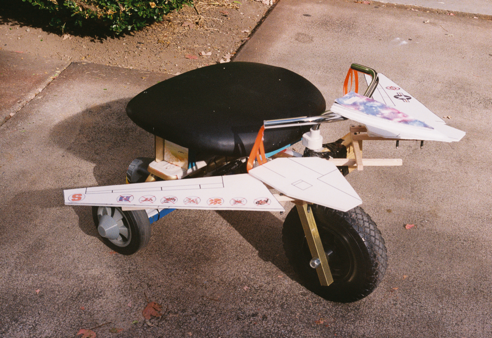
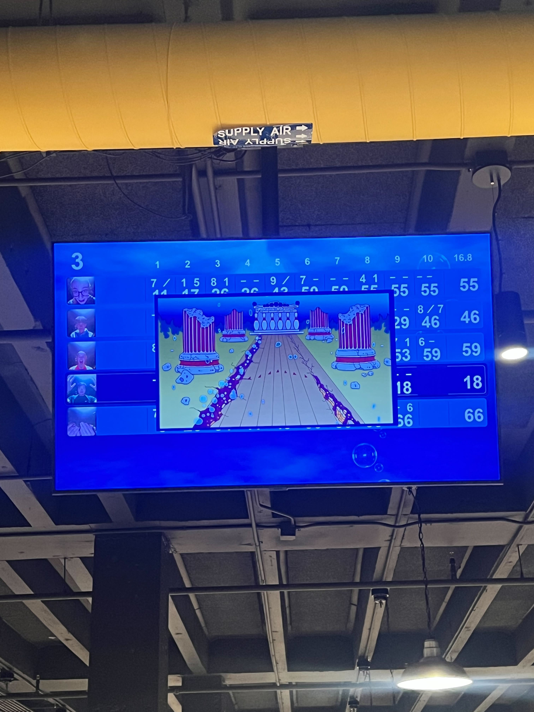

Technical
Coffee+CAD
We lowered the bar to learning about using CAD by sharing CAD skills over cups of coffee and light snacks provided by AMGT, taught by AMGT members!

Past Events
From free workshops learning to use advanced fabrication equipment to fun social mixers, our events give every student a chance to get their hands on real aerospace engineering and form a team that supports them.
We lowered the bar to learning about using CAD by sharing CAD skills over cups of coffee and light snacks provided by AMGT, taught by AMGT members!

We had our 2nd bowling social with a dash of competition between our members and discussed future project ideas while scoring strikes before Finals season! This time, we provided food for all attendees!

The Aero Maker Space uses AMGT manufacturing samples and equipment to show off the AE and inspire future makers to thousands of attendees at the Atlanta Science Festival!

To coordinate the AE makers around campus, AMGT ran a town hall with all AE club members detailing future upgrades to the on-campus Aero Maker Space (AMS), sharing the socials AMGT, and opening the floor for feedback on the direction of AE student manufacturing.

AMGT works with the Aero Maker Space and Aerospace Machine Shop to help build and race a Mini 500 tricycle, a GT tradition! Our 2025 trike was inspired by the F-14 Tomcat! Trikes must ride 8 laps and switch wheels every 2 laps.

AMGT rented the Tech Rec bowling alley and pool area in the GT Student Center to connect members and promote fun events between makers!

AMGT takes part in a GT AE tradition to run coffee and donuts every year, providing donuts and coffee to early bird students and bring them to the Aero Maker Space!